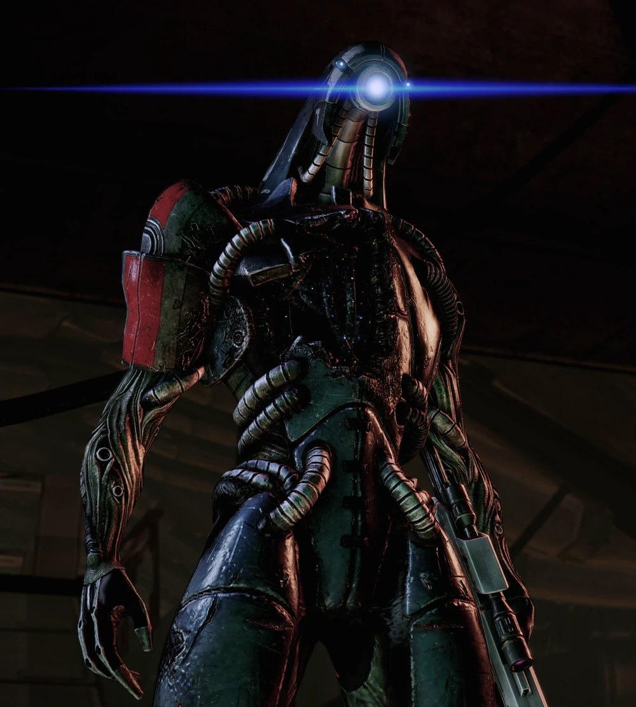

Latest update
The archive is open
Version 1 of this site is now running. The first two reports are filed: what happens to Mass Effect now, and where to start in 2026.
What happens to Mass Effect now? Where to start in 2026
Remember · Replay · Gather
Shepard-Commander. Organics. Visitors. BioWare closed on 21 October 2026, and the next game will not be built. The galaxy remains. This platform has decided to keep it in order.
platform.status online
platform.purpose remember, assist, gather
platform.note 1,183 runtimes allocated to this page. Consensus reached: it is a good page.
Latest update
Version 1 of this site is now running. The first two reports are filed: what happens to Mass Effect now, and where to start in 2026.
What happens to Mass Effect now? Where to start in 2026New here?
Which games to run, in which order, which edition to acquire, and where Andromeda fits. No spoilers. We checked.
Begin at the beginningNext N7 Day · 7 November
N7 Day is the day fans celebrate the series. This platform is counting. It is very good at counting.
Images filed by this platform. Each one is a moment worth keeping.


Remember. The real-world history of the games and the studio, from an office in Edmonton to October 2026. See the timeline.
Replay. Help for first-time players, and for returning Commanders who have told themselves "only one more run" before.
Gather. A place for fans to share stories, art and N7 Day plans. This section will grow over the coming year. Organics are invited.